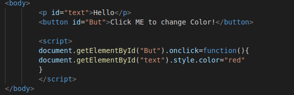

TASK 1/4:
Change the color of text in paragraph
Sol:

TASK 2/4:
Change the font size of text
Sol:
TASK 3/4:
Make an element dissappear
Sol:
TASK 4/4:
Make 3 Circles & on click over those circles it should disappear
Sol :